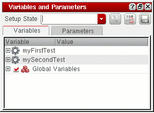

4
Working with Global Variables
Global variables are the variables defined globally in the ADE Assembler setup. Being global, these variables can be used by all the tests if you need to use a common value in all or multiple tests. Another benefit is that you can override the design variable values to be used in test simulations without modifying the value in the test itself. The simulator will use the value you specified and not the value from the schematic.
This chapter provides details about global variables and how to configure these in ADE Assembler.
For more information, see the following:
- Creating a Global Variable
- Loading the Default Set of Global Variables
- Parameterizing Cellviews Defined in the Config View
- Importing Sweep Variables as Global Variables
- Saving Parameters and Global Variables to a Saved State
- Importing Global Variables from a Saved State
- Exporting Global Variables to a CSV File
- Importing Global Variables from a CSV File
- Enabling and Disabling Global Variables for All Tests
- Disabling Global Variables for Specific Tests
- Using calcVal for Calibration
Creating a Global Variable
To create a new global variable, do the following:
-
On the Data View assistant pane or the Variables tab of the Variables and Parameters assistant pane, right-click Global Variables and choose Add Global Variable.
Alternatively, click where it says Click to add variable in an expanded Global Variables tree on the Data View pane or the Variables tab of the Variables and Parameters pane.The Create Global Variable form appears.
-
In the Variable Name field, type a name for your global variable.
The name must begin with a letter or number and can contain only letters and numbers. - In the Variable Value field, type the value for your global variable.
-
Click OK.
Your global variable appears in the Global Variables tree on the Date View assistant pane and the Variables tab of the Variables and Parameters assistant pane. A global variable setting takes precedence over all other settings for variables that have the same name (such as a design variable with the same name). -
To define sweep values for this global variable, do one of the following:
- Double-click the Value field next to the global variable and modify the value.
-
Double-click the Value field next to the global variable, then click the browse button to define a parameter specification. For more information, see Adding or Changing a Variable or Parameter Specification.
To specify a valid sweep value, ensure that:- The value is not a blank string or does not contain a whitespace
- If contains a range, it has the start, step, and stop values separated by colons, commas, spaces, or a combination of these
- If specified as an expression, it is written in correct SKILL syntax and contains balanced parenthesis and quotes
- If contains a file path, it is enclosed in double quotes so that it is not evaluated
If you need to save some information about a global variable, you can add notes for it. For this, right-click the global variable on the Data View pane and click Notes to open the Add/Edit Notes form. Add notes in the Notes field and click OK. These notes are displayed in the tooltip for the variable and saved in the setup database.
For related information, see Adding Notes to a Test.
A variable is removed from the list of global variables only if it is not a part of any test in the maestro view. If any test contains the variable being deleted, the variable is removed and created again in the Global Variables list.
Loading the Default Set of Global Variables
If you have a distinct set of default variables to be used for all the cellviews in each library or not associated with any library, you can define a SKILL function to load them into a new ADE Assembler setup.
When you open an ADE Assembler setup, the program loads the set of default variables associated with the same library as the setup (if it exists). After that, it loads the set of default variables not associated with any library (if it exists).
This pre-defined a set of variables appears in the Global Variables tree on the Date View assistant pane and the Variables tab of the
To create and load a set of global variables, do the following:
-
Create a file containing only one axlSetDefaultVariables SKILL function call for each set of global variables you want to define. (For example,
adeGlobals.il.)-
For global variables particular to a library, one call to the function for each library:
axlSetDefaultVariables( '(
For example:global1value1global2value2) "libName" )axlSetDefaultVariables( '(_n_len 1u _sim_time 100n) "demoLib" )
-
For global variables not for a particular library, only one call to the function:
axlSetDefaultVariables( '(
For example:global1value1global2value2) )axlSetDefaultVariables( '(_n_len 1u _sim_time 100n) )
-
For global variables particular to a library, one call to the function for each library:
-
You can load the file into the CIW using the load command.
For example:load("adeGlobals.il")
You can put this load command in your .cdsinit file so that the program loads it every time you run the software.
If your file contains more than one call for a library or more than one call that does not name a library, the last call takes precedence such that the program loads only those global variables that you defined in each of the last of these calls.
Parameterizing Cellviews Defined in the Config View
Related blogs for this feature:
- Virtuosity: Sweeping Multiple Config Views
- Virtuosity: Sweeping Multiple DSPF Views in ADE
By default, the setup options defined in the ADE Assembler environment are applied to the cellview specified in the estimated or extracted views), defined in the config view of that cell.
Prerequisites to sweep the config view of a cell:
- The design in the ADE Assembler test must be the config view
- More than one view should be present in the config view for the cell you want to sweep
-
The Parasitic Mode on the Parasitic Mode toolbar is set to
No Parasitics/LDE
To sweep the view for a cell, you need to define a global variable prefixed with CONFIG. The value of this global variable is a list of view names from the config view. These view names are swept during simulation. The following sections describe how to create config sweep variables or import config sweeps from the parasitic setup, and how to view these variables on the Run Preview tab or the simulation results:
- Creating Config Sweep Variables
- Importing Config Sweeps from the Parasitic Setup
- Using Config Sweep Variables in the Corners Setup Form
- Viewing Config Sweep Variables in Run Preview
- Viewing Config Sweeps in the Simulation Results
Creating Config Sweep Variables
To create config sweep variables, perform the following steps:
-
Right-click Global Variables on the Data View pane and choose Add Config Sweeps.
The Add/Edit Config Sweep form is displayed, as shown below.
-
In the Cell Name drop-down list, select the cell name for which you need to sweep the config views.
-
In the View Name List field, enter a list of view names to be swept.
Alternatively, click Select to open the Select Views form as shown below.
The list of available views for the cell is displayed in the All Views list. Select the required view names in this list and click to add to the Selected Views list. Click OK to close the form. The view names are appended to list in the View Name List field. -
Click OK to close the Add/Edit Config Sweep form.
A config sweep variable is created and added to the Global Variables list on the Data View pane. The newly added config sweep variable is selected by default.
Important Points to Note
-
You can also create CONFIG variables by adding a global variable using the Click to add variable command in the Global Variables list on the Data View pane. Specify a variable name and value in the Create Global Variable form. Ensure that the variable name is in the
CONFIG/<library-name>/<cell-name> format and the value is a list of view names. - The cells specified in the config sweep should not be a top-level cell in the design hierarchy.
-
When you run a simulation with config sweeps, by default, ADE Assembler runs a check to ensure that all design variables are defined in the first cellview in the sweep list. If a design variable is missing in any other swept cellview, it would result in a simulation error. You can enable this check for all swept cellviews by setting the allowVariableCheckingDuringConfigSweep environment variable to
t. -
When the checkInstanceBindings environment variable is set to
t, ADE Assembler check for instance bindings in the Hierarchy Editor. If the instance or occurrence bindings in the config view conflict with the config sweeps, the tool displays a message prompt with a list of those instances and seeking confirmation whether the tool should clear the bindings in the config view.
Importing Config Sweeps from the Parasitic Setup
If the parasitic setup already uses the estimated, netlist_layout, or extracted views, you can directly import those to create a config sweep variable. For this, right-click Global Variables and choose Import Config Sweeps from Parasitic Setup.
A config sweep variable is created and added to the existing list of global variables. The name of the variable is CONFIG/<library-name>/<cell-name>, where the library and cell are the same as in the parasitic setup. The value of this variable contains a list of all the views referred in the parasitic setup, as shown below.
Using Config Sweep Variables in the Corners Setup Form
You can parameterize your cellview by using config sweep variables in the Corners Setup form. To create a config sweep variable in the corners, perform the following steps:
- Click click to add in the Design Variables section of the Corners Setup form to display a list of available global and local design variables.
- Choose a config variable from the list of variables.
- In the row of the selected config variable, double-click in a column to make the cell editable.
-
Click the ellipses button to the right of the text box to open the Add/Edit Config Sweeps form.
The Add/Edit Config Sweep form is displayed, as shown below.
Use this form to sweep the config views in the same way as done to create config sweep design variables in the Data View assistant. -
Click OK to close the Add/Edit Config Sweep form.
A config sweep variable is created and added to the Design Variables list in the Corners Setup form.
Related Topics
Creating Config Sweep Variables
Viewing Config Sweep Variables in Run Preview
If config sweep variables are added to the setup, the Run Preview tab for the Single Run, Sweeps and Corners run mode shows the swept values in a column for the corresponding global variable, as shown below.
Viewing Config Sweeps in the Simulation Results
Similar to the other parameterized variables, config sweep variables are also shown in the gray colored rows on the Results tab, as shown below.
Important Points to Note
- You can use multiple config sweep variables in a maestro cellview. However, you need to ensure that there is no dependency between these variables.
- If multiple config sweep variables are specified, no specific order is maintained while modifying the config using these variables.
- You can create a parametric set containing more than one config sweep variables.
- Config sweeps are not considered if the config view contains instance bindings in Virtuoso Hierarchy Editor. You need to remove the bindings.
- When config sweep variables are used, ADE Assembler simulations do not consider the ignoreDesignChangesDuringRun and singleNetlistForAllPoints environment variables. If a simulation is already running and you make any changes in the design, the changes are considered for the simulation in progress. Also, a separate netlist is created for every data point.
-
By default, the config information is saved in the netlist directory for every data point. This is because the moveConfigsToNetlistDir environment variable is set to
t. If, for debugging purposes, you want to save the config information for every point in the <library>/<cell>/directory structure, you can set this variable tonil. This will show the generated config in Virtuoso Hierarchy Editor.
Importing Sweep Variables as Global Variables
If you have saved the sweep settings specified in the Parametric Analysis tool in the Virtuoso Analog Design Environment L (ADE L) in a parameters file (.il file), you can then import the sweep variables in the file as global variables. For more information about parametric analysis in ADE L, see the Virtuoso Analog Design Environment L User Guide.
To import sweep variables as global variables, do the following:
-
In the Data View pane or the Variables tab of the Variables and Parameters pane, right-click a global variable and choose Import Sweep.
The Choose Parametric State File to Import form appears. -
Select the file containing the sweep settings you saved in the Parametric Analysis tool in ADE L and click Open.
The sweep variables in the file are displayed as global variables in the Global Variables tree on the Data View assistant pane and the Variables tab of the Variables and Parameters assistant pane.
Saving Parameters and Global Variables to a Saved State
You can save the global variables and parameters from the Variables and Parameters assistant to an ADE state.
To save the variables and parameters, do the following:
-
After setting the variables and parameters and their values in the Variables and Parameters assistant, specify a name for the new ADE state in the Setup State field, as shown below.
 -
Click Save Variables and Parameters (
) to save the setup state.
Importing Global Variables from a Saved State
To import global variables and parameters along with their setup information from a saved state by using the Variables and Parameters assistant, do the following:
- From the Setup State list, select name of the state from which you want to import the details.
-
Click Load Variables and Parameters (
).
All the variables and parameters are loaded from the given ADE state and displayed in their respective tabs.
Comparing Variables and Parameters of Different Setup States
Before loading the global variables from a saved state, you can also choose to compare the variables and parameters with the currently active state or another setup state.
-
Select the name of a state from the Setup State list and click Compare Setup States(
). The Select a Setup State to Compare form is displayed.
- From the Select the reference setup state drop-down list, select the reference setup state.
The comparison is displayed in a form, where the form name gets customized according to the setup states being compared.
For example, on comparing the setup state with the currently active state, the Compare Setup State with Active Setup form is displayed as shown below.
In case a comparison is made between two different setup states, the form name gets customized accordingly.
The following form shows the comparison between the setup state and a state maestroState1.
The variables and parameters that have different values in the two setups are highlighted in yellow.
You can also import the global variables and parameters by using the Loading State form. For more details, see Loading State Information.
Exporting Global Variables to a CSV File
You can export the global variables from the ADE Assembler setup to a CSV file. You can later import them as global variables in the same or any other ADE Assembler setup, or as design variables in ADE Explorer.
To export the global variables defined in the active setup of ADE Assembler, do the following:
- In the Data tab of the Data View assistant, right-click Global Variables.
-
Choose Export to CSV.
The Export Variables form is displayed. - In this form, browse to a directory where you want to save the variables in a CSV file.
- Specify the name of the CSV file in the File Name field.
- Click Save to close the form and export the variables.
All the global variables, their values, notes, and the enabled or disabled status currently defined in the active setup are saved in the specified CSV file in a standard format, as shown in the example below.
Importing Global Variables from a CSV File
If you have global variables or design variables saved in a CSV file, you can import them as global variables in the active setup.
To import the variables from a CSV file, do the following:
- In the Data tab of the Data View assistant, right-click Global Variables.
-
Choose Import from CSV.
The Import Variables form is displayed. - In the Import Variables form, browse to a directory and select the CSV file.
- Click Open to close the form and import the variables.
The variables defined in the CSV file are added to the Global Variables list.
- If a variable already exists with the same name as that of a variable being imported, it is overwritten by the imported variable.
- The enabled or disabled status of the imported variable is also imported, and set accordingly.
- If the information about parametric sets is available in the CSV file, the parametric sets are also created after importing the variables.
Enabling and Disabling Global Variables for All Tests
You can enable or disable global variables before starting your simulation. This allows you to specify the set of global variables you want to be swept for a particular simulation.
To enable a global variable for all tests,
-
In the Global Variables tree on the Data View pane or the Variables tab of the Variables and Parameters pane, select the check box to the left of the variable.
Alternatively, right-click the variable and choose Enable/Disable from the context-sensitive menu.
To disable a global variable for all tests,
-
In the Global Variables tree on the Data View pane or the Variables tab of the Variables and Parameters pane, clear the check box to the left of the variable.
Alternatively, right-click the variable and choose Enable/Disable from the context-sensitive menu.
When a global variable is disabled, its value will not be used for simulation but its definition is retained in the Global Variables tree on the Data View pane and the Variables tab of the Variables and Parameters pane. The value of the design variable (specified for a test) that has the same name as the global variable will be used for the simulation. The strikethrough no longer appears for the design variable value in the test tree. For example, in the following figure, the value of design variablevin_acspecified for the tests namedmyFirstTestandmySecondTestwill be used because the global variablevin_acis disabled.
To toggle the enabling or disabling of more than one global variable,
-
In the Global Variables tree on the Data View pane or the Variables tab of the Variables and Parameters pane, select the variables, right-click and choose Enable/Disable from the context-sensitive menu.
The enabled variables are disabled and the disabled variables are enabled.
When all global variables are disabled, global variable values will not be used for simulation but their definition is retained in the Global Variables tree on the Data View pane and the Variables tab of the Variables and Parameters pane. The value of design variables (specified for tests) that have the same name as the global variable will be used for the simulation.
Disabling Global Variables for Specific Tests
By default, global variables are swept over all the tests that are enabled in the Data View pane. You can disable a global variable for specific tests if you do not want to sweep the global variable over those tests. If a global variable is disabled for a test, that is, it overrides the global variable, you can specify a single and sweep values to be used only for that test.
You can disable a design variable for a test in any of the following ways:
Disabling a Global Variable for a Test using the Variables and Parameters Assistant
To disable global variables using the Variables and Parameters assistant pane.
-
Click the Variables tab of the Variables and Parameters pane.
The Variables tab displays the list of global variables as shown below:
-
Click the plus sign to the left of the global variable name to view the names of tests over which the global variable will be swept during simulation.
For example, the following figure indicates that the values45u,50uand55uspecified for global variableirefwill be swept over the tests namedmyFirstTest and mySecondTest. In this example, themyFirstTestandmySecondTesttests have a design variable namedirefwith the value50u. The test names and values are displayed with a strikethrough because the global variableirefoverrides the design variableiref.
-
In the Value column, select the check box next to the name of the test for which you want to disable the global variable.
The global variable is disabled for the test. For example, in the following figure, the global variableirefis disabled for the test namedmyFirstTest. Because of this, the value50uwill be used for the test during simulation. The global variable will be swept only for the test namedmySecondTest.
- Hiding Overridden Design Variables for a Test
- Updating Global Variable Values with Design Variable Values
Disabling a Global Variable for a Test using the Data View Assistant
You can disable a global variable for a test using the Data View assistant also, as shown in the following figure:
The global variable iref is using the value specified for the test myFirstTest instead of using the sweep points specified for the global variable.
The settings made using the Data View assistant are also reflected in the Variables and Parameters assistant and vice-versa.
In the Data View pane, if you place the mouse pointer on the global variable that is disabled for a test, a tooltip is displayed containing the text (local override), as shown in the following figure:
- Hiding Overridden Design Variables for a Test
- Viewing Simulation Results When Design Variables Use Swept Values
Updating Global Variable Values with Design Variable Values
To update the value of a global variable with that of a corresponding design variable, do the following:
-
In an expanded test tree on the Data View pane or on the Variables tab of the Variables and Parameters pane, right-click a design variable and choose Create/Update Global.
The value of the global variable that has the same name as the design variable is updated.
Updating Design Variable Values with Global Variable Values
To update the test design variables with the value of the corresponding global variables, do the following:
-
In the Global Variables tree on the Data View pane or the Variables tab of the Variables and Parameters pane, right-click a variable, choose Backannotate to Test and do one of the following:
Using calcVal for Calibration
For calibration purposes, you often need to use the output values from a calibration test in the conditions of the test being verified. The multi-test environment of ADE Assembler allows you perform calibration. One of the ways to create calibration conditions or expressions is to use the calcVal function. You can also use pre-run scripts and run plans for calibration.
This section describes how to use calcVal for calibration when you need to pass a result value across tests, corners, or history results. You can use different arguments of the calcVal function to pass result values. For example, to use the result of the nominal corner in the calculation of a design variable used in other corners, you can use the ?cornerName argument of calcVal.
You can use calcVal in design variables, global variables, outputs, corner setup, or OCEAN scripts.
Using calcVal in Design Variables
Set the value of design variable var1 as calcVal("<outputName>" "<testName>").
For this, create a design variable for a test as var1, and type in the calcVal expression. Alternatively, you can drag and drop an output from the Outputs Setup pane to the value of var1. A calcVal expression is automatically created in the value of var1. If required, you can further add more arguments to the expression.
Note that the calcVal expression is being added to the design variable for test AMP, whereas the output used in calcVal is for test LPF. To perform this calculation, ADE Assembler first runs simulation for test LPF and then calculates the value for var1 in test AMP.
You can also use the calcVal lint check button in the Run Preview tab to run pre-simulation checks on calcVal expressions. You can then view the resulting output messages in the CIW.
Using calcVal in Design Variables with Corners in Setup
When the setup is using corners that are enabled for all tests, in the example shown above, the output value for each corner run for test LPF is used for the corresponding corner run for test AMP. That is the calibrated value for corners are used as shown below.
expr1 calculated for LPF:C0 -> used for var1 calculated for AMP:C0
expr1 calculated for LPF:C1 -> used for var1 calculated for AMP:C1
expr1 calculated for LPF:C2 -> used for var1 calculated for AMP:C2
However, if you need to calibrate only one corner C0 run for test LPF and use its output in all corners run for test AMP, you can use the ?cornerName argument in the calcVal expression, as shown below.
You also need to disable corners Nominal and C1 for test LPF in the Corners Setup, as shown below.
The calibration result of corner C0 is used for the Nominal and C1 run for test AMP, as shown below.
For more details and examples on running calibrations using these methods, refer to the
Return to top